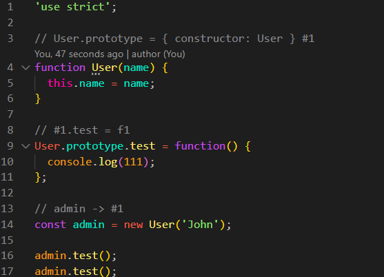
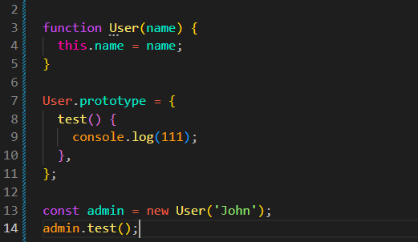

Constructor Questions
Intro
Agora vamos entender melhor como os construtores e a propriedade prototype funcionam juntos.
Agora vamos entender melhor como os construtores e a propriedade prototype funcionam juntos.
JS:

Começaremos pelo seguinte código:
'use strict';
function User(name) {
this.name = name;
}
User.prototype = {
test() {
console.log(111);
},
};
const admin = new User('John');
admin.test();

Primeiro temos uma função construtora chamada User. Ela recebe um name e coloca esse valor no novo objeto através do this.
Depois colocamos o método test() no prototype de User. Esse método poderá ser encontrado pelos objetos criados através de new User().
Em seguida criamos o objeto admin:
const admin = new User('John');
Nesse momento, o JavaScript cria um novo objeto e faz com que o prototype desse novo objeto seja o objeto que estava em User.prototype naquele momento.
Podemos imaginar a estrutura assim:
admin ↓ User.prototype ↓ test()
O objeto admin possui diretamente a propriedade name, mas não possui diretamente o método test().
Quando fazemos:
admin.test();
O JavaScript procura test() primeiro dentro de admin. Como não encontra, procura no prototype de admin.
Encontra o método no objeto que estava em User.prototype e executa: console.log(111).
Agora vamos modificar o código:
function User(name) {
this.name = name;
}
// #1
User.prototype = {
test() {
console.log(111);
},
};
const admin = new User('John');
// #2
User.prototype = {
test() {
console.log(222);
},
};
admin.test();
Mesmo depois de trocarmos User.prototype para o objeto #2, o resultado continuará sendo 111.
Isso acontece porque admin foi criado quando User.prototype apontava para o objeto #1.
Quando fazemos:
const admin = new User('John');
o objeto admin fica ligado ao #1.
admin ↓ #1 ↓ test() → 111
Depois fazemos:
User.prototype = #2;
Agora User.prototype aponta para #2, mas isso não muda a ligação que admin já possui com #1.
admin ↓ #1 → test() → 111 User.prototype ↓ #2 → test() → 222
Portanto, substituir User.prototype não altera o prototype dos objetos que já foram criados.
Os objetos já criados continuam ligados ao objeto que estava em User.prototype no momento da criação.
Imagine que User.prototype seja um modelo.
Quando fazemos new User(), o novo objeto recebe uma ligação com o modelo que estava definido naquele momento.
Primeiro temos o modelo #1:
User.prototype → #1
Criamos admin:
admin → #1
Depois trocamos o modelo:
User.prototype → #2
O admin continua ligado ao #1. Ele não passa automaticamente para o #2.
Portanto:
admin → #1 Novos objetos → #2
É por isso que substituir o objeto inteiro de prototype depois da criação dos objetos normalmente não é uma boa prática.
Agora existe uma diferença importante. Em vez de substituir o objeto inteiro de User.prototype, podemos alterar uma propriedade do objeto que já existe.
Por exemplo:
User.prototype.test = function() {
console.log(111);
};
Agora criamos o objeto:
const admin = new User('John');
Depois alteramos o próprio método que já existe no mesmo objeto prototype:
User.prototype.test = function() {
console.log(222);
};
Dessa vez, quando fazemos:
admin.test();
o resultado será 222.
Isso acontece porque não criamos um novo objeto para User.prototype. Apenas alteramos o método dentro do mesmo objeto.
O admin continua ligado ao mesmo objeto prototype, mas agora esse objeto possui uma nova versão do método test().
admin ↓ User.prototype ↓ test() → 222
Essa é a diferença mais importante desta aula:
Substituir o prototype: criamos outro objeto. Objetos antigos continuam ligados ao objeto antigo.
Alterar o prototype: continuamos usando o mesmo objeto, apenas modificando suas propriedades. Os objetos que já estão ligados a ele enxergam essa alteração.
Na prática, normalmente definimos primeiro a função construtora:
function User(name) {
this.name = name;
}
Depois adicionamos os métodos ao seu prototype:
User.prototype.test = function() {
console.log(111);
};
E somente depois criamos e utilizamos os objetos:
const admin = new User('John');
admin.test();
Dessa forma, o prototype já está preparado antes da criação dos objetos.
Resumo:
1. A função construtora possui uma propriedade chamada prototype.
2. Quando usamos new User(), o novo objeto fica ligado ao objeto que estava em User.prototype naquele momento.
3. Se depois substituirmos User.prototype por outro objeto, os objetos antigos não mudam de prototype.
4. Se alterarmos o objeto prototype existente, os objetos ligados a ele conseguem enxergar essa alteração.
5. O objeto criado por new não herda da função User. Ele fica ligado ao objeto que está em User.prototype.